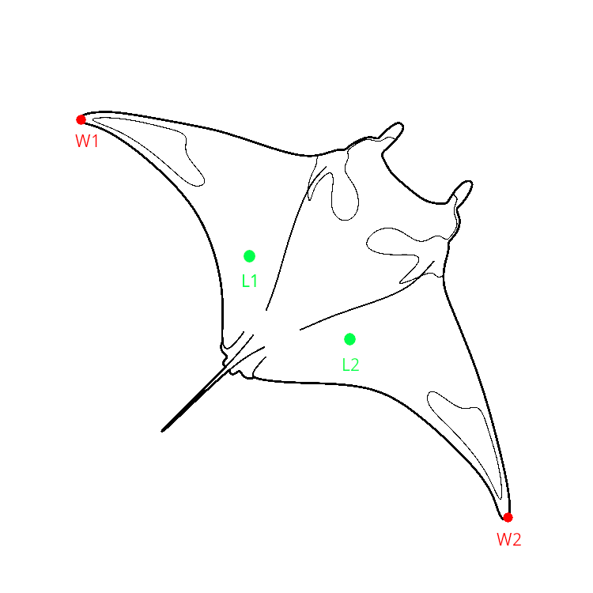

Manta Size from Pixel Coordinates Calculator
Enter coordinates for Line 1 (wing to wing):
W1 (x):
W1 (y):
W2 (x):
W2 (y):
Enter coordinates for Line 2 (laser to laser):
L1 (x):
L1 (y):
L2 (x):
L2 (y):
Enter distance between lasers (cm):
Distance (cm):
Calculate Lengths
